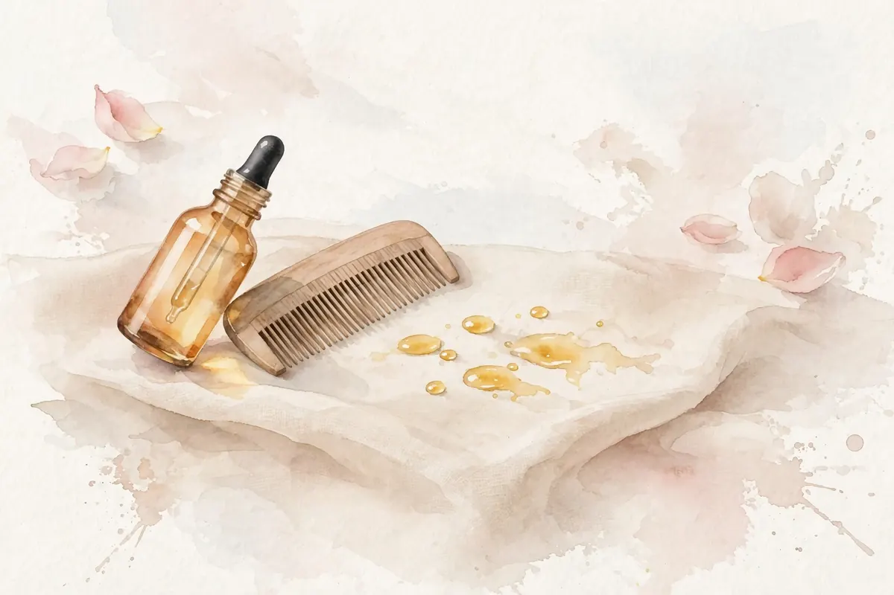

トップ ＞ ヘアケア ＞ ヘアオイルの量とつける場所：毛先を中心にした使い方の考え方
ヘアオイルの量とつける場所：毛先を中心にした使い方の考え方

ヘアオイルは、髪の量や長さによって、使う量とつける場所が変わるアイテムです。施術の現場でも、頭皮や髪の相談の流れで「オイルはどこにつけたらいいの」と聞かれることがあります。オイルは少量でも広がりやすいので、量の加減が分かりにくいところがあります。この記事では、ヘアオイルの量の目安と、つける場所の考え方を整理します。特定の商品の話ではなく、ヘアオイルの使い方の考え方です。
量の目安の読み方
まず確認したいのは、パッケージに書かれている使用量の目安です。「1〜2プッシュ」「適量を手のひらに」といった案内が書かれていることが多いです。ポンプ式の場合は、1プッシュの量が決まっているので、回数で調整しやすくなります。スポイト式やボトル式の場合は、手のひらに出す量で調整します。
量の目安は、髪の長さや量によって変わります。ショートヘアなら1プッシュ、ミディアムなら1〜2プッシュ、ロングなら2プッシュ程度が目安になることが多いですが、髪の量や毛の太さによっても変わります。はじめて使うときは、少なめの量から始めて、足りないと感じたら少しずつ足すのが無理のないやり方です。
つけすぎたと感じたときは、ドライヤーで乾かす前に、タオルで軽く押さえて余分なオイルを取る、という対処があります。つけすぎたままにしておくと、髪が重たく見えることがあります。量は、自分の髪に合った加減を、使うたびに確かめていくのが基本です。
つける場所の考え方
ヘアオイルは、つける場所で仕上がりの印象が変わります。基本は、毛先を中心につけることです。毛先は、髪の中でも乾燥しやすく、絡まりやすい部分です。手のひらにオイルを広げてから、毛先を手のひらで包むようにしてなじませます。
中間部分には、残った分を軽くなでるようにしてつけます。根元や頭皮に直接つけるのは、べたつきの原因になることがあるので、避けたほうが無難です。表示に「毛先を中心に」といった案内がある場合は、それに従います。
前髪や顔まわりの髪は、量を控えめにします。顔まわりの髪にオイルが多すぎると、顔についてしまうことがあります。手のひらに残った分を、軽く表面をなでる程度にとどめておきます。分け目の部分も、量を控えめにするのがポイントです。
使うタイミングと保管
ヘアオイルを使うタイミングは、乾かす前と、乾かしたあとの2通りがあります。乾かす前に使う場合は、タオルドライのあと、髪が半乾きの状態でつけます。乾かしたあとに使う場合は、仕上げとして毛先を中心に少量つけます。表示に「タオルドライ後にお使いください」といった案内がある場合は、それに従います。
ドライヤーの前に使う場合は、手ぐしで髪全体になじませてから乾かします。乾かしたあとに使う場合は、手のひらに少量出して、毛先を中心になじませます。1日に何度もつけ直すより、1回の量を調整するほうが、つけすぎを防げます。
朝のスタイリングで使う場合は、寝ぐせを直してから、毛先を中心に少量つけます。朝は時間がない日も多いので、前日の夜に量の加減を確かめておくと、朝の段取りがスムーズになります。オイルのあとにワックスなどのスタイリング剤を重ねる場合は、オイルの量をさらに控えめにして、重ねる順番を決めておきます。洗い流さないトリートメントと併用する場合は、どちらを先につけるか、表示の案内を確認しておきましょう。
保管は、直射日光の当たらない涼しい場所が基本です。浴室に置きっぱなしにすると、温度や湿度の変化で中身の状態が変わることがあります。使い切りの目安は、開封日をメモしておくとつかみやすくなります。
セラフィナ「ヘアオイルは毛先が主役だよ。根元につけすぎるとべたついちゃうから、手のひらに残った分を軽くなでるくらいでいいの」

セラフィナ｜美容の道具箱の案内役
「量と表示が分かれば、美容は失敗しない。」——セラフィナと白猫のモコが、買う前のチェックポイントを案内します。綺麗になりたい気持ちに正直に、でも表示は冷静に読むのが、このサイトの約束です。